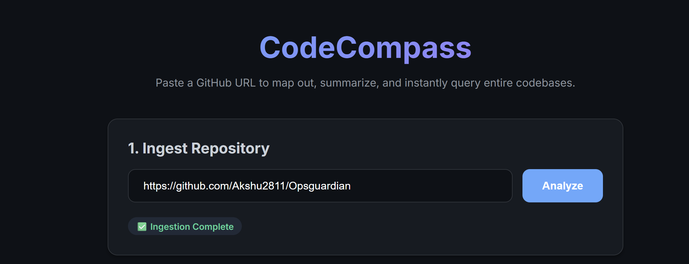
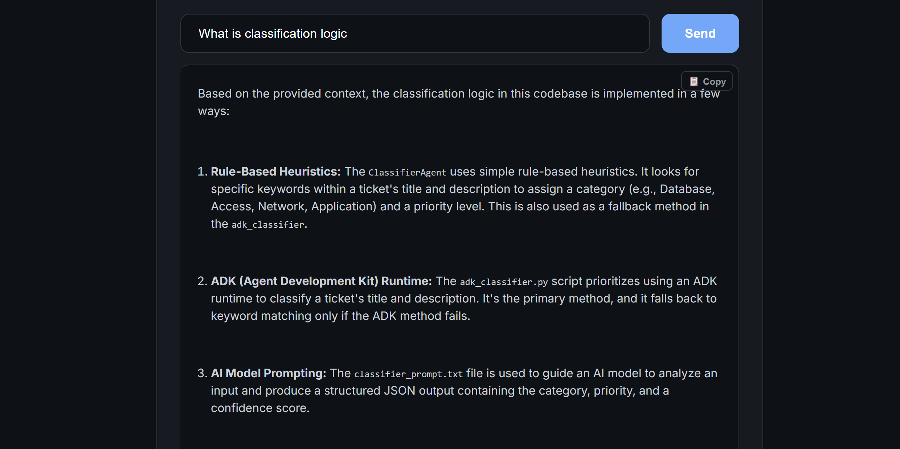
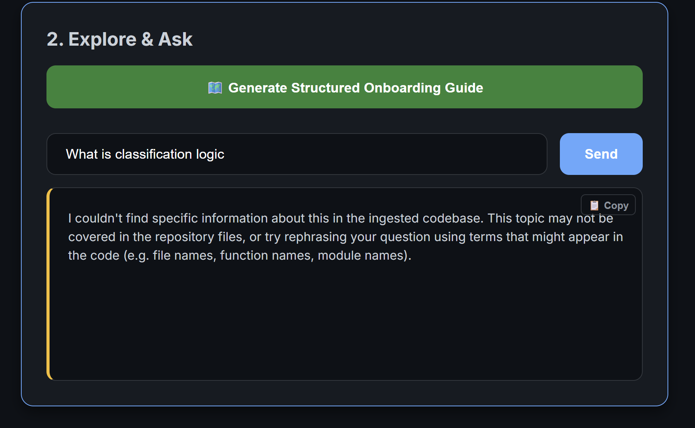
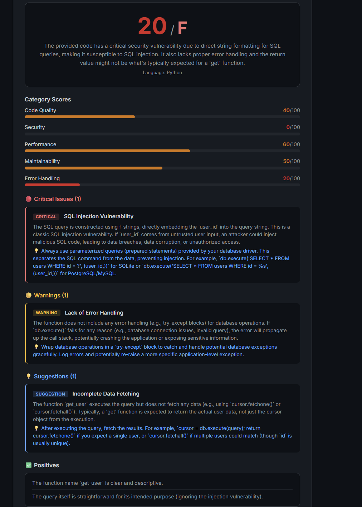
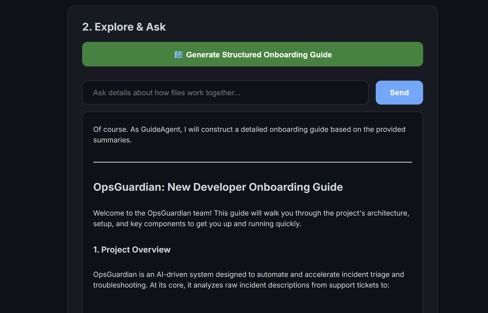
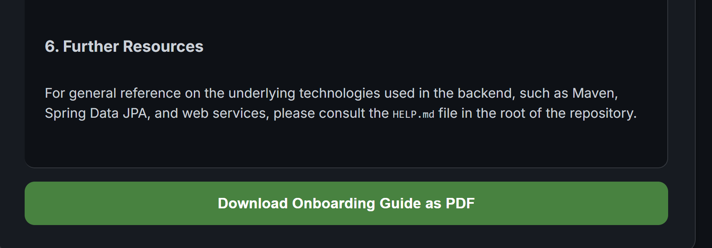

An AI agent system that reads an unfamiliar GitHub repository and hands a new engineer a map of it — architecture, module summaries, and a guided path in, in minutes instead of days.
Onboarding into a new codebase is still one of the slowest parts of engineering. Good documentation doesn't tell you how the pieces actually connect — and reading through hundreds of files to find out can eat a first week or two of any new role.
Fetches the full repository tree via GitHub's API, keeps source files (.py .js .ts .go .java and similar), and drops anything over 100KB or non-code. Runs as a background task so the API never blocks while a large repo ingests.
Each file gets a 2–3 sentence functional summary and a 768-dimension embedding via text-embedding-004 — stored as serialized vectors directly in SQLite. No external vector database, no added infrastructure cost.
Ask architecture questions and get grounded answers. Generate a structured onboarding guide, exportable as a real PDF. Or submit a pull request for review — checked not just in isolation, but against the whole codebase it lives in.

Paste any GitHub URL and CodeCompass ingests the full repository in the background.

Ask how something works and get an answer traced back to the actual files and logic.

Ask about something that genuinely isn't in the codebase, and CodeCompass says so — instead of guessing. That's the amber border from the field notes below, actually in the interface.

A real PR review in action — scored across five categories, catching a critical SQL injection vulnerability with a concrete fix, not just a vague warning.

One click synthesizes everything indexed into a structured onboarding walkthrough.

The onboarding guide exports as a real, structured PDF — the feature rebuilt from scratch after the first version broke.
Reads every incoming request and routes it — search, guide, or ingest — to the right agent downstream.
gemini-2.5-flashWalks the GitHub tree, filters by extension and size, and streams files into the pipeline asynchronously.
GitHub REST APISummarizes each file's function and computes its embedding for later semantic retrieval.
gemini-2.5-flashAnswers architecture questions in natural language, with a similarity guardrail that refuses to guess when context is genuinely missing.
gemini-2.5-proSynthesizes indexed summaries into a structured, step-by-step onboarding path for a new engineer.
gemini-2.5-proPulls a PR diff and scores it across five categories — then cross-checks it against the entire ingested codebase to catch breaking changes the author never touched.
Codebase-awareAgents instantiated at module import time threw missing key inputs errors on Cloud Run, because vertexai.init() ran after the agents already needed it.
Moved vertexai.init() to the very top of every agent module, before any ADK imports.
The first version used HTML2Canvas to screenshot the DOM into a PDF. It produced bloated files that frequently failed to open.
Rebuilt export with pure jsPDF — parsing markdown line by line, auto-wrapping text, and drawing real tables instead of pictures of tables.
Ask an LLM about "payment logic" in a repo with no payments code, and it will often invent a plausible-sounding answer anyway.
A cosine similarity threshold (< 0.3) plus a strict system instruction: say "insufficient information" instead of guessing. Shown in the UI as an amber border, so it reads as honest rather than broken.
The five core agents, the FastAPI server, and the frontend were first built in Google Antigravity. The Code Review Agent and codebase-aware PR review layer were added later in Claude Code.